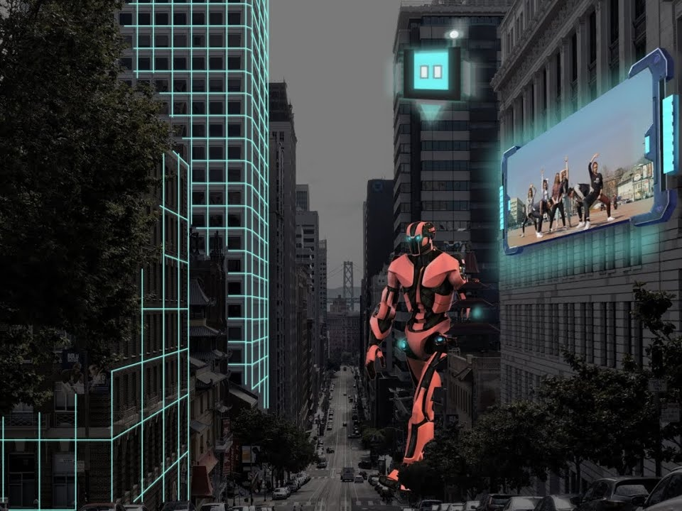
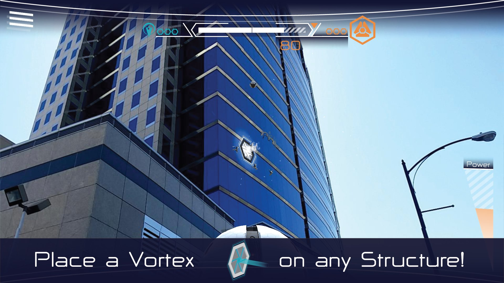
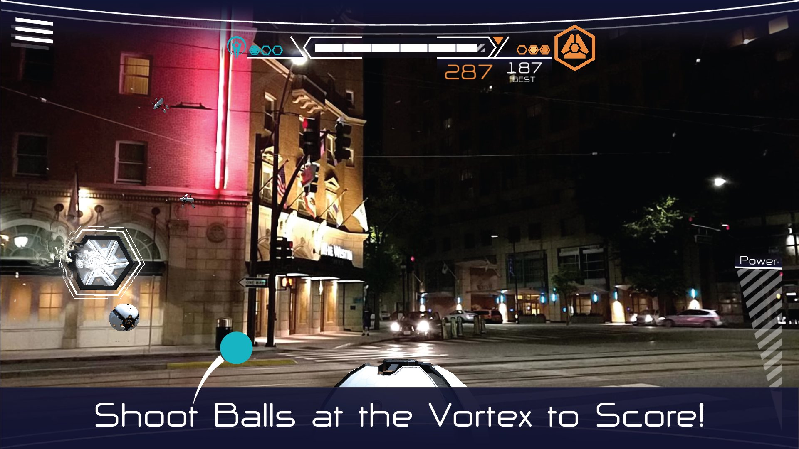
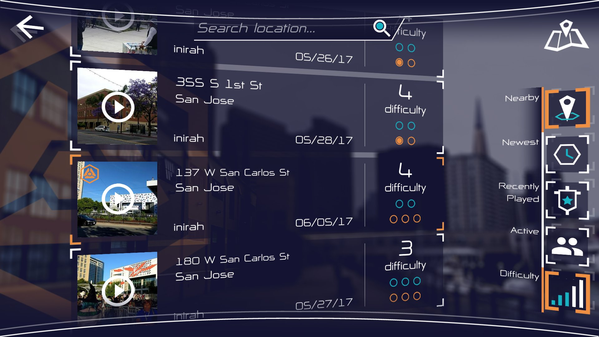
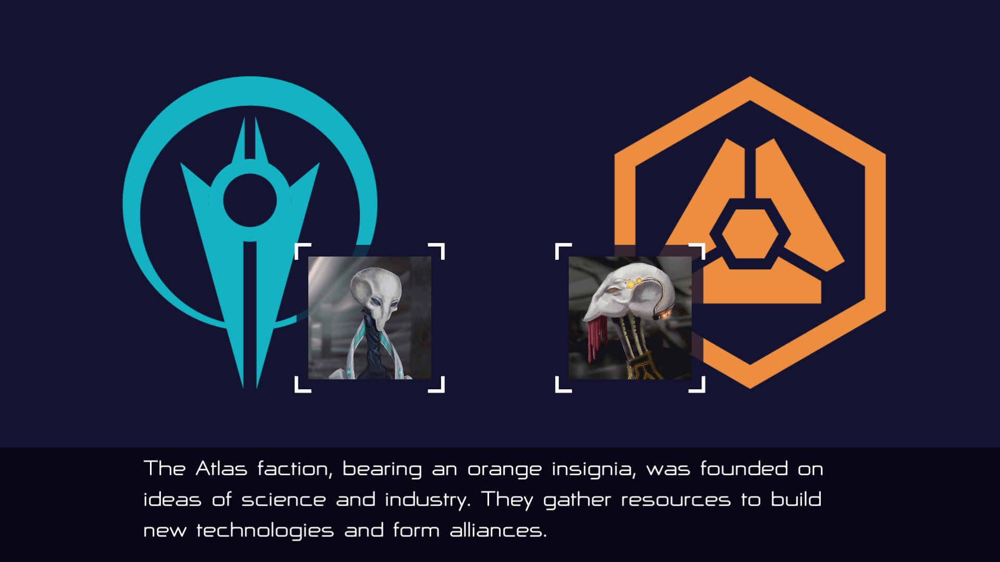
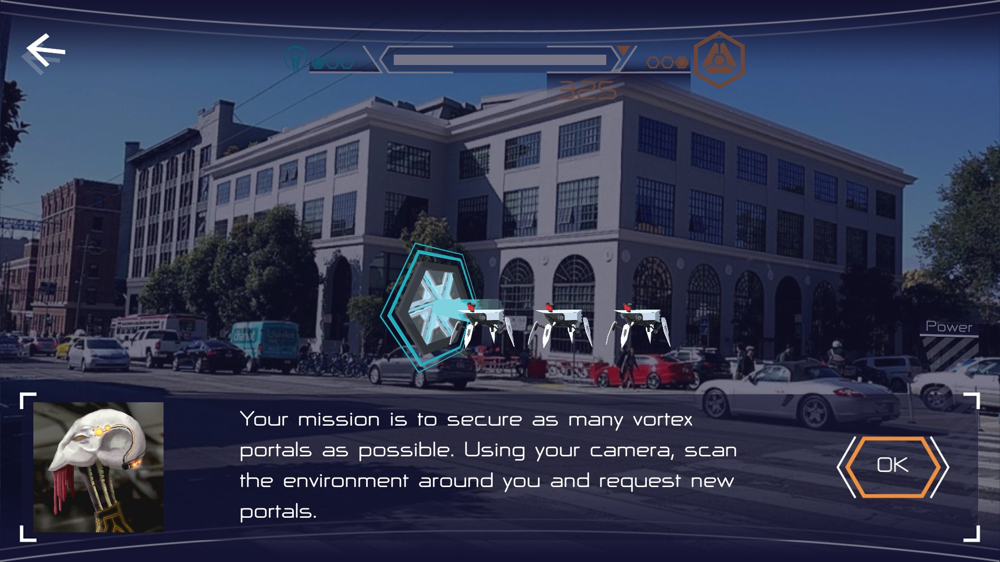

Sturfee AR Projects
City-scale augmented reality projects created at Sturfee

Overview
Sturfee was a startup creating their own outdoor, city-scale augmented reality technology. I joined initially to work on Vortex Ball, an AR mobile geolocation game inspired by Pokémon GO. When the company pivoted to selling its technology directly to businesses, my focus shifted to creating demos that showcased Sturfee's AR capabilities as it advanced over the years. These ranged from general-purpose demos used for broader outreach, to targeted builds tailored to specific companies we were in active business talks with to help them envision what they could do with the technology.
The above demo given to journalists touches on various AR features I worked to showcase over my time at Sturfee in the individual projects listed below.
Understanding the Technology
To understand the projects throughout this page, it's helpful to know the basics of the technology first. Sturfee's AR is able to match existing 3D models of a city environment to what's being viewed through a mobile camera or AR headset. By having the models spatially aligned with the buildings in the camera, digital objects viewed through the screen can realistically interact with the environment as well as correctly occlude when passing behind structures.
Normally these models are invisible for the sake of immersion. The video however shows a green 3D grid effect to show where the models are in relation to the real environment. I actually implemented this grid visual personally much earlier in the company's life (this video was made after I left) that's really just a projection effect over the invisible models. This visual was originally only a concept shown in the company's promotional material, but after its actual implementation it became a mainstay visual feature as well as debugging tool.
Vortex Ball
Vortex Ball was a mobile AR game that allowed users to create and compete over virtual arenas at real-world city locations. Through the app, a player could take a picture of the environment and then tap on the ground or buildings of the image to place a vortex. Since the city colliders were saved to the image position, tapping the building through the screen snapped the vortex to its real-world surface through a simple raycast.


Once an arena was created, the goal was to throw a virtual ball via screen swipes into the vortex in as few attempts as possible. I reworked the initial ball tossing mechanics to better account for the speed, length, and direction of each swipe. This allowed for more targeted, precise throws, as well as major long-distance shots that fixed broken arenas where the vortex was placed incredibly high and far out into the environment.

Arenas were persistent and could be accessed by all players anywhere once created. Each arena tracked both team and individual player scores. Individual scores were initially only determined by the amount of swipes it took to score. I added the time it took for the ball to reach the vortex as an additional variable to allow more variance in the scores. This encouraged more competition in the leaderboard of each arena as it made ties much less common.


Team scores were determined based on the teams players chose to align with when they first started the game. The first team to have three players score in the arena claimed ownership of it. Team scores reset to zero after this and the other team would have a chance to take the arena again while the owning team would fight to maintain it.
Team ownership of the arena came with the advantage of not getting attacked by the robot spiders crawling around in the environment. I programmed robot spider enemies that spawned out of the vortex at the start and crawled around the sides of buildings. While they could potentially get in the way of the ball on their own, if your team did not own the arena, they would occasionally shoot lasers at the ball and knock it off course if they hit it.
Footage of the app version of the game has unfortunately been lost. The video below shows an earlier prototype of the game before team mechanics even existed. It demonstrates an early version of the spiders moving around the environment (sadly without lasers).
The video also exhibits a live AR mode not present in the app store version where players could play arenas through their phone camera when physically at their location in real-time. The feature was not fully developed enough for Vortex Ball, but would serve as a demo in its own right as the company pivoted to selling its AR platform directly to businesses.
Street AR
Street AR was the first general-purpose demo I created for the company. I combined Sturfee's AR with Foursquare and Mapbox to create an enhanced city exploration experience.
Users would point their camera toward buildings around them and tap on them to find out more. The user tap was raycasted into a point on the building's surface and have a visual marker instantiated there (similar to vortex placement in Vortex Ball). That point on the building would then also get translated into a GPS position that was sent to Foursquare to find the businesses closest to it. Those businesses were then displayed alongside that point, ordered by distance.
An overhead map of the area was also simultaneously shown using Mapbox. I synced Sturfee's 3D building models with their map to create a more precise live 3D map effect. The digital markers created on the sides of buildings in the camera view were synced to pins at their corresponding locations in the map view.
The video above shows a version that also calculates the distance and elevation of the tapped point from the user. Sturfee's VPS enabled more precise user positioning than GPS alone, thus allowing for these calculations to be more accurate.
World Anchors
World anchors bound persistent AR objects to exact GPS coordinates. The precision of placement allowed for things like digital advertisements to be placed square against a wall or animated objects to fly perfectly between buildings. I built a significant number of these demos often around the offices of prospective clients to conveniently show off the technology at their location. Other demos were built as larger showcases around major points of interest.
Fun Facts:
1. The above video also displays an ad for the Japanese mobile carrier brand "au" because we had a meeting with their operating company KDDI in the same area.
2. The rotating coffee logo in both videos above are placed outside real coffee shops.
Outcome
The projects shown here are not the full extent of my work at Sturfee, nor do they often even show the final, more polished versions of them. Many other experimental demos of the technology either failed to find footing or wouldn't fully materialize until some time after I left.
However, real business deals and applications of these features did result from demos shown here. Our biggest partner KDDI made numerous exhibits and promotional events across Japan with this technology at places like Shibuya crossing, Tokyo station, and many major sports arenas.


The funny thing is, the way you can tell the apps above not only used Sturfee AR but also directly referenced my projects is that they're all showing a feature I programmed that can be seen working properly in the Las Vegas CES demo, but appears to be semi-broken in these videos.
You can see a red arrow effect that points toward the "Look Here" circle when it's off camera. The white icon that's part of this arrow is meant to indicate the circle icon at the center of the screen being placed inside the "Look Here" circle to align the camera and activate the AR event. The center circle image appears to have been dereferenced, resulting in a blank white square instead. On top of this, the red arrow continues pointing at the "Look Here" circle position when the camera moves away, even after it has activated and disappeared (watch the Las Vegas demo at 1:08 to see how it's supposed to look and operate).
To be fair, the two gifs show "development build" in tiny text at the bottom right, but the video demo doesn't. I'm honestly unsure of if the SDK developer on the team took this visual without my knowledge and improperly implemented it into the Sturfee SDK at the time, or if the Japanese developers incorrectly copied it directly from my source projects. Regardless, I'm proud my projects were referenced one way or another to build these experiences, bugs and all.